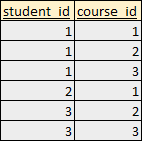

SQL: Self Join Derivation
In this excersie, I will explain how to determine the number of records returned by self joins. A self join is when a table is joined to itself. The examples will demonstrate that you can determine how many records will be returned by a self join based on the number of self joins and the number of times a value x appears in column y.
#run only once
create database test;
drop table if exists test.courses;
create table test.courses (
student_id integer
,course_id integer
)
;
insert into test.courses (student_id, course_id) values
(1, 1)
,(1, 2)
,(1, 3)
,(2, 1)
,(3, 2)
,(3, 3)
;
The resulting table is shown below:

For the below excersise, please assume the following:
1) let y = the column to which you self join
2) let xi = a value in column y (For example, "1" is a value in the "student_id" column). Assume that the number of possible i values represents the number of unique values that appears in column y
3) let xi.count = number of times value x appears in column y (For example, the value "1" appears 3 times in the "student_id" column and the value "2" appears 1 time in the "student_id" column)
4) let j = number of self joins to column y
Given these parameters, the general formula for determining the number of rows returned is the following:
number of rows returned = (x1.count) ^ (j+1) + (x2.count) ^ (j+1) + ... + (xn.count) ^ (j+1)
If all values of x are unique (do NOT appears more than once), then the number of rows returned is the following:
number of rows returned = (x1.count) + (x2.count) + ... + (xn.count)
In the examples below, I will show queries with 1,2,3, and 4 self joins. In each case, the formulas above for determining the number of records returned hold true:
# 1 self join: returns 14 rows (3^2 + 1^2 + 2^2)
select c1.student_id, c2.student_id
from test.courses as c1, test.courses as c2
where c1.student_id=c2.student_id
;
# 2 self joins: returns 36 rows (3^3 + 1^3 + 2^3)
select c1.student_id, c2.student_id, c3.student_id
from test.courses as c1, test.courses as c2, test.courses as c3
where c1.student_id=c2.student_id
and c2.student_id=c3.student_id
;
# 3 self joins: returns 98 rows (3^4 + 1^4 + 2^4)
select c1.student_id, c2.student_id, c3.student_id, c4.student_id
from test.courses as c1, test.courses as c2, test.courses as c3, test.courses as c4
where c1.student_id=c2.student_id
and c2.student_id=c3.student_id
and c3.student_id=c4.student_id
;
# 4 self joins: returns 276 rows (3^5 + 1^5 + 2^5)
select c1.student_id, c2.student_id, c3.student_id, c4.student_id, c5.student_id
from test.courses as c1, test.courses as c2, test.courses as c3, test.courses as c4, test.courses as c5
where c1.student_id=c2.student_id
and c2.student_id=c3.student_id
and c3.student_id=c4.student_id
and c4.student_id=c5.student_id
;